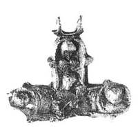

Catalog › CE-0671 · KOR2003-II.1.1.50
Valvă de revers de cruce-encolpion deformată, cu Maica Domnului Odighitria, apostolii Pavel și Petru, Mântuitorul
sec. XI–XII (1001–1200) · Kiev (Catedrala Sf. Sofia), Ucraina · Rezervația Națională „Sofia Kievskaia” (NZSK), Kiev, inv. СМАА 1629а
single valve of a reliquary cross, aramă; c. XI–XII (1001–1200); found at Kiev (Catedrala Sf. Sofia), Ucraina; kept at Rezervația Națională „Sofia Kievskaia” (NZSK), Kiev.


Identificare
- Categorie
- Valvă izolată
- Material
- Aramă
- Tehnică
- Turnare în relief; Gravare (incizie)
- Stare
- Fragmentară
- Dimensiuni
- Î 41 × L 62 × Gr 5 mm
Iconografie
- Revers
- Maica Domnului cu Pruncul; Sf. Petru; Hristos Pantocrator
- Descriere revers
- Valvă de revers de cruce-encolpion cu capete rotunjite (capătul de jos pierdut); interiorul valvei neted. În centru Maica Domnului Odighitria în relief, completată cu gravură. În medalioane, marcate cu crestături, busturi în relief ale sfinților: la stânga apostolul Pavel, la dreapta Petru, sus imaginea în relief a Mântuitorului (?). La stânga Maicii Domnului inscripție în coloană gravată cu linie (litera de sus M, cea de jos [?]), sus la dreapta o literă, P. Pe contur crucea a fost ornamentată cu crestături. Crucea puternic deformată (strivită); reliefurile pruncului Hristos păstrate complet, muchiile crucii pe alocuri netezite; pierdere în interior (coroziune) și pe marginea exterioară a medalionului stâng.
- Inscripții
- M / [?] (în coloană, la stânga Maicii Domnului); P (sus, la dreapta)
Datare și atribuire
- Datare
- sec. XI–XII (1001–1200)
- Centru
- Necunoscut
- Tipologie
- Korzukhina–Peskova 2003, tip II 1 1
Descoperire
- Localitate
- Kiev (Catedrala Sf. Sofia)
- Țară
- Ucraina
- Context
- Biserică / mănăstire
Păstrare și referințe
- Colecție
- Rezervația Națională „Sofia Kievskaia” (NZSK), Kiev
- Nr. inventar
- СМАА 1629а
- Bibliografie
- G. F. Korzukhina, A. A. Peskova, Древнерусские энколпионы. Нагрудные кресты-реликварии XI–XIII вв., Sankt-Petersburg, 2003 [Korzukhina–Peskova 2003], p. 67, cat. nr. II 1 1/50, reprodusă la Табл. 19 (planșe, p. 261).
- Figura
- Табл. 19
- Planșe
- Korzukhina–Peskova 2003, Табл. 19 (planșă fără paginație proprie în PDF; p. 261 tipărită)
- Observații
- Datare după Peskova: sec. XI–XII. Circumstanțe: Săpături probabil M. K. Karger, 1940, Catedrala Sf. Sofia. Dimensiuni: fragment: 4,1 cm păstrați. Coordonate: nu sunt date în sursă.
Citare: Corpus Encolpiorum, CE-0671, Valvă de revers de cruce-encolpion deformată, cu Maica Domnului Odighitria, apostolii Pavel și Petru, Mântuitorul, --root/piese/KOR2003-II.1.1.50/ (accesat 2026-10-20).